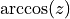
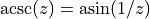

Complex Numbers¶
The functions described in this chapter provide support for complex numbers. The algorithms take care to avoid unnecessary intermediate underflows and overflows, allowing the functions to be evaluated over as much of the complex plane as possible.
For multiple-valued functions the branch cuts have been chosen to follow the conventions of Abramowitz and Stegun in the ‘Handbook of Mathematical Functions’. The functions return principal values which are the same as those in GNU Calc, which in turn are the same as those in ‘Common Lisp, The Language (Second Edition)’ and the HP-28/48 series of calculators.
Complex Functions¶
In this section we describe the mathematical functions on complex numbers.
Note
Please note that the standard functions from the math do not accept complex numbers.
Basic Functions¶
- complex.new(a, b)¶
Create a new complex number with real part
aand imaginary partb.
- complex.real(z)¶
Returns the real part of a complex number.
- complex.imag(z)¶
Returns the imaginary part of a complex number.
- complex.abs(z)¶
Returns the norm of the complex number
zcalculated as . This function accepts a real or complex number as argument.
- complex.norm2(z)¶
Returns the square norm of the complex number
zcalculated as . This function accepts a real or complex number as argument.
- complex.rect(z)¶
Returns the real and the imaginary parts of the real or complex number
z. Ifzis a real number returns an imaginary part equal to zero.
- complex.conj(z)¶
Returns the complex conjugate of the complex number
z.
- complex.i¶
The imaginary unit.
Elementary Complex Functions¶
- complex.sqrt(z)¶
This function returns the square root of the complex number z, . The branch cut is the negative real axis. The result always lies in the right half of the complex plane.
- complex.exp(z)¶
This function returns the complex exponential of the complex number z, .
- complex.log(z)¶
This function returns the complex natural logarithm (base e) of the complex number z, . The branch cut is the negative real axis.
- complex.log10(z)¶
This function returns the complex base-10 logarithm of the complex number z, .
- complex.pow(z, a)¶
The function returns the complex number z raised to the complex power a, . This is computed as using complex logarithms and complex exponentials.
Complex Trigonometric Functions¶
- complex.sin(z)¶
This function returns the complex sine of the complex number z,
- complex.cos(z)¶
This function returns the complex cosine of the complex number z,
- complex.tan(z)¶
This function returns the complex tangent of the complex number z, .
- complex.sec(z)¶
This function returns the complex secant of the complex number z, .
- complex.csc(z)¶
This function returns the complex cosecant of the complex number z, .
- complex.cot(z)¶
This function returns the complex cotangent of the complex number z, .
Inverse Complex Trigonometric Functions¶
- complex.asin(z)¶
This function returns the complex arcsine of the complex number z, . The branch cuts are on the real axis, less than -1 and greater than 1.
- complex.acos(z)¶
This function returns the complex arccosine of the complex number z, . The branch cuts are on the real axis, less than -1 and greater than 1.
- complex.atan(z)¶
This function returns the complex arctangent of the complex number z, . The branch cuts are on the imaginary axis, below -i and above i.
- complex.asec(z)¶
This function returns the complex arcsecant of the complex number z, .
- complex.acsc(z)¶
This function returns the complex arccosecant of the complex number z, .
- complex.acot(z)¶
This function returns the complex arccotangent of the complex number z, .
Complex Hyperbolic Functions¶
- complex.sinh(z)¶
- This function returns the complex hyperbolic sine of the complex
number z, .
- complex.cosh(z)¶
- This function returns the complex hyperbolic cosine of the complex
number z, .
- complex.tanh(z)¶
- This function returns the complex hyperbolic tangent of the
complex number z,
 .
.
- complex.sech(z)¶
- This function returns the complex hyperbolic secant of the complex
number z, .
- complex.csch(z)¶
- This function returns the complex hyperbolic cosecant of the
complex number z, .
- complex.coth(z)¶
- This function returns the complex hyperbolic cotangent of the
complex number z, .
Inverse Complex Hyperbolic Functions¶
- complex.asinh(z)¶
This function returns the complex hyperbolic arcsine of the complex number z, . The branch cuts are on the imaginary axis, below -i and above i.
- complex.acosh(z)¶
This function returns the complex hyperbolic arccosine of the complex number z, . The branch cut is on the real axis, less than 1. Note that in this case we use the negative square root in formula 4.6.21 of Abramowitz & Stegun giving .
- complex.atanh(z)¶
This function returns the complex hyperbolic arctangent of the complex number z, . The branch cuts are on the real axis, less than -1 and greater than 1.
- complex.asech(z)¶
This function returns the complex hyperbolic arcsecant of the complex number z, .
- complex.acsch(z)¶
This function returns the complex hyperbolic arccosecant of the complex number z,
 .
.
- complex.acoth(z)¶
This function returns the complex hyperbolic arccotangent of the complex number z, .